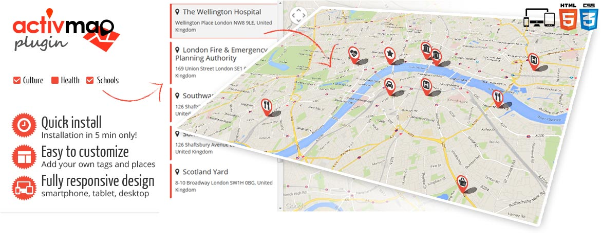

The perfect plugin to research and locate custom services and equipments in a city, among other things,
Activ'Map is a JQuery plugin using the Google Maps API V3 and Bootstrap 3.x which display a map with markers sorted by categories.
Accordion panels contains checkbox filters (tags) which shows or hides the associated places in a removable panel and the corresponding markers on the Google Maps.
Click on a place to focus on the marker on the map and vice versa.
The markers can be clustered if too numerous. The system is fully responsive so the removable panel displays itself or not according to the device.
Remove or add your own categories, tags and places as many as you want!
Define the center of the map by simply inputting the latitude and the longitude.
Based on HTML5 - CSS3 - Bootstrap 3.x - JQuery - Google Maps API V3
Thank you for purchasing our plugin. If you have any questions that are beyond the scope of this help file, please contact us. Thanks so much!
To implement the Activ'Map on a page, you need to link the following CSS and JS files.
<!-- JQuery --> <script src="http://code.jquery.com/jquery-1.10.2.min.js"></script> <!-- Bootstrap 3 / Optional --> <link rel="stylesheet" href="bootstrap/css/bootstrap.min.css"> <script src="bootstrap/js/bootstrap.min.js"></script> <!-- Google Maps API V3 --> <script src="https://maps.googleapis.com/maps/api/js?js?v=3.exp&libraries=places&sensor=false"></script> <!-- Activ'Map plugin --> <link rel="stylesheet" href="jquery-activmap/css/jquery-activmap.css"> <script src="jquery-activmap/js/jquery-activmap.js"></script> <script src="jquery-activmap/js/markercluster.min.js"></script>
Then, all that you have to do is call the Activ'Map on the page with your own places.
$(function(){
//Activ'Map plugin init
$('#activmap-wrapper').activmap({
places : [
{title:'Place_1', address:'XX Str City', phone:'+XX XX XXXX', tags:['tag_01'], lat:XX.XXX, lng:-X.XXX, img:'pic_1.jpg'},
{title:'Place_2', address:'XX Str City', phone:'+XX XX XXXX', tags:['tag_01','tag_02'], lat:XX.XXX, lng:-X.XXX, img:'pic_2.jpg'}
]
});
});
<!-- Reset button -->
<a id="activmap-reset" href="#">Reset</a>
<!-- List of filters -->
<input type="checkbox" name="marker_type[]" value="my_tag_01"> TAG 1<br>
<input type="checkbox" name="marker_type[]" value="my_tag_02"> TAG 2<br>
<input type="checkbox" name="marker_type[]" value="my_tag_03"> TAG 3<br>
...
<div id="activmap-wrapper">
<!-- Places panel (auto removable) -->
<div id="activmap-places" class="hidden-xs">
<div id="activmap-results-num"></div>
</div>
<!-- Map wrapper -->
<div id="activmap-canvas"></div>
</div>
You can also use JSON file to define your places. Simply enter the url of this file instead of the default array of places.
$(function(){
//Activ'Map plugin init
$('#activmap-wrapper').activmap({
places : '/places.json'
});
});
JSON example:
{
"places": [
{"title":'Place_1', "address":'XX Str City', "phone":'+XX XX XXXX', "tags":['tag_01'], "lat":XX.XXX, "lng":-X.XXX, "img":'pic_1.jpg'},
{"title":'Place_2', "address":'XX Str City', "phone":'+XX XX XXXX', "tags":['tag_01','tag_02'], "lat":XX.XXX, "lng":-X.XXX, "img":'pic_2.jpg'}
]
}
| Name | Expected type / values | Description | Example |
|---|---|---|---|
| places | array or url of .json file | list of place objects {title, address, phone, tags, lat, lng, img} |
|
| lat | numeric | latitude of the center | 51.499418 |
| lng | numeric | longitude of the center | 51.499418 |
| zoom | integer [0-21] | default zoom level on load | |
| autogeolocate | true or false | enables / disables the auto geolocation on load to set the center of the map | |
| cluster | true or false | enables / disables clustering for large amounts of markers | |
| mapType | "roadmap", "satellite", "perspective" | as the name suggests | |
| posPanel | "left" or "right" | position of the removable panel | |
| showPanel | true or false | shows / hides the removable panel | |
| radius | integer | max radius around the position in kilometers | 20 for 20km |
| country | text (2 characters - ISO 3166-1) | to filter by country | "ca": Canada, "us": United States, "fr": France |
| style | object | map styles | snazzy maps styles |
| Name | Expected type / values | Description | Example |
|---|---|---|---|
| title | text | title of the place | Harrods |
| address | text | address of the place | 87-135 Brompton Road London SW1X 7XL, United Kingdom |
| phone | text | phone of the place | +44 20 7730 1234 |
| tags | array | list of filters the place belongs to | ['shops_01','shops_02'] |
| lat | numeric | latitude of the marker | 51.499418 |
| lng | numeric | longitude of the marker | -0.163239 |
| URL | text | URL of a website | http://activmap.pandao.eu |
| img | text | image path (logo, sign...) | path/image.jpg |